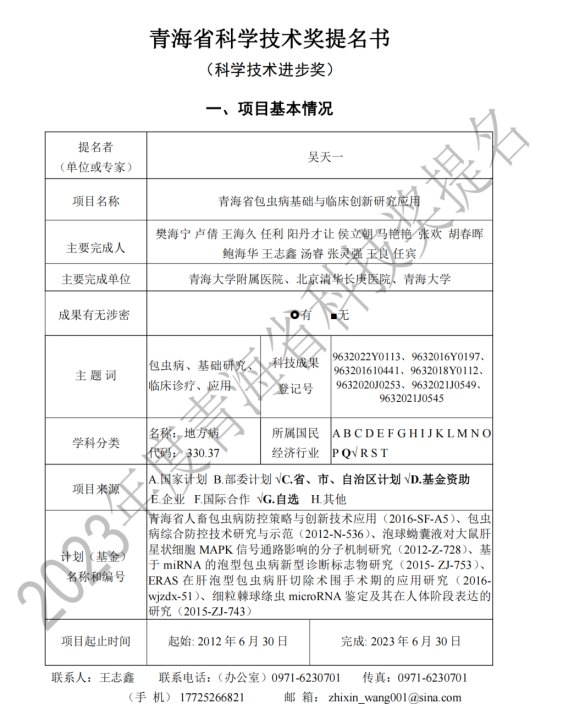
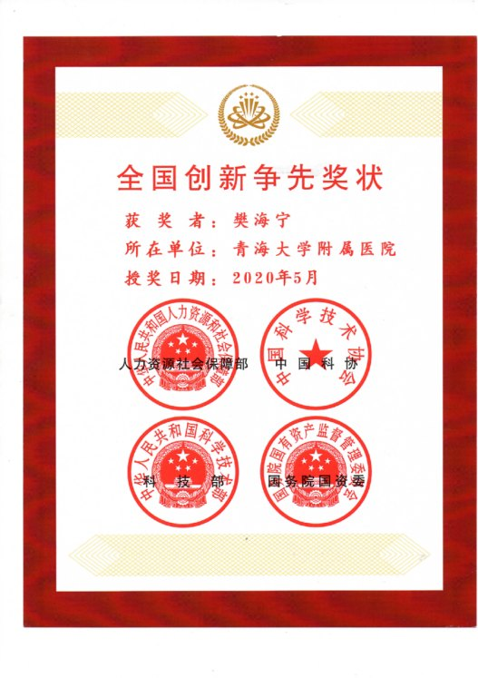
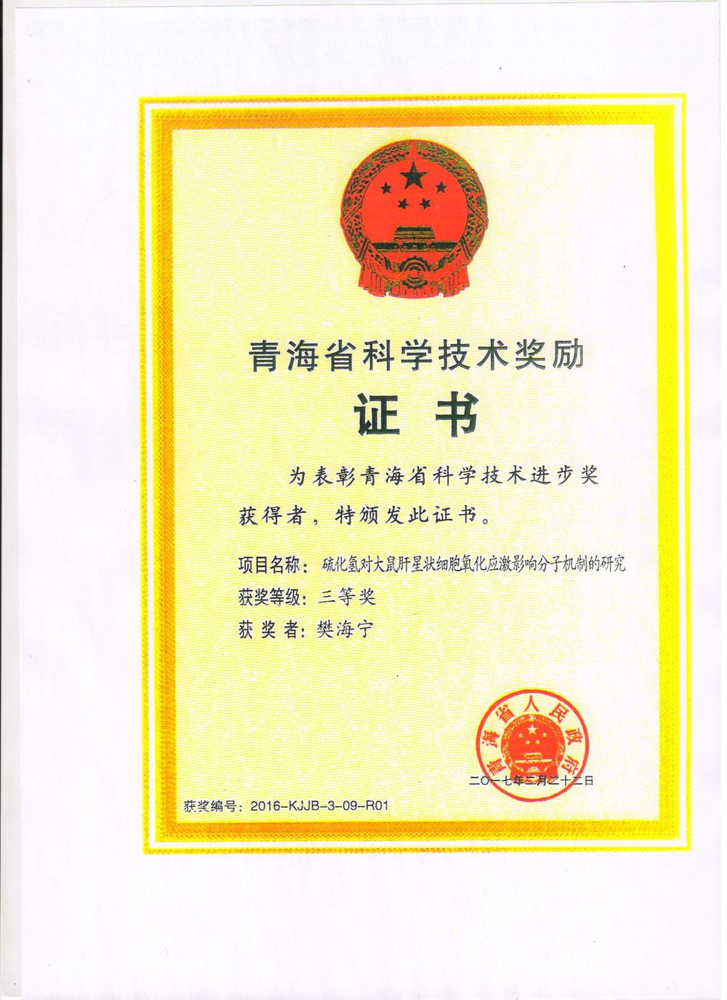
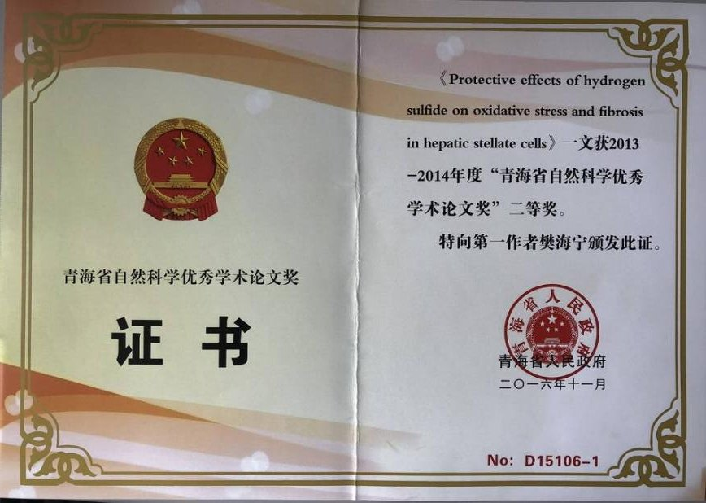

青海省科学技术进步奖一等奖
“青海省包虫病基础与临床创新研究应用”获2023年度青海省科学技术进步奖一等奖，本人排名1/15。
授奖单位：青海省人民政府Research Highlights
本页根据课题组“青海学者”申报材料、团队成果介绍和包虫病免疫相关工作材料整理，集中展示樊海宁课题组在包虫病基础与临床创新、肝胆胰外科平台建设、医学人工智能和区域防诊治体系中的代表性工作。
Awards
横向滑动查看代表性奖励。奖项名称、年度和排名来自申报材料整理。

“青海省包虫病基础与临床创新研究应用”获2023年度青海省科学技术进步奖一等奖，本人排名1/15。
授奖单位：青海省人民政府
科技志愿服务相关奖励，本人排名1。
授奖单位：人社部、中国科协、科技部、国务院国资委
“硫化氢对大鼠肝星状细胞氧化应激影响分子机制研究”获奖，本人排名1/7。
授奖单位：青海省人民政府
Protective effects of hydrogen sulfide 相关论文获2013-2014年度优秀学术论文奖，本人排名1/4。
代表方向：肝纤维化与氧化应激“硫化氢对大鼠肝星状细胞氧化应激分子机制研究”入选“十二五”期间优秀科研成果，本人排名1/7。
代表方向：肝星状细胞机制研究Platforms
团队建设的核心价值，不只是论文和项目，而是把高原地区包虫病和肝胆胰外科的临床需求转化为平台、技术和人才体系。
牵头组建青海省首个肝胆胰外科专科，推动精准外科、微创外科、数字化外科和复杂肝胆胰疾病诊疗能力提升。
组建青海省包虫病研究重点实验室，支撑包虫病基础研究、临床转化、诊断标志物和防控策略研究。
以首席专家身份参与青海省包虫病临床医学研究中心建设，连接临床病例、样本资源、影像资料和多中心协作。
面向三江源等高发地区，推动临床诊疗、预防控制、动物防疫和基层医疗能力建设，服务地方病防治。
担任青海省医学会肝胆胰外科分会主任委员、中国医师协会棘球蚴病外科专家工作组副主任委员等学术职务，促进区域学科协作。
申报材料显示，团队已培养博士、硕士和青年骨干，并通过教学培训、基层帮扶和多中心合作推动高原地区医疗服务能力提升。
Scientific Directions
包虫病免疫相关材料显示，团队研究从免疫细胞反应、单细胞空间组学、细胞因子网络、外泌体miRNA到影像AI和标志物开发逐步展开。
关注NETs、Treg/Foxp3、巨噬细胞、T细胞耗竭、NK细胞等在包虫病感染和免疫逃逸中的作用，解释宿主免疫应答失衡。
结合单细胞转录组和空间转录组解析感染灶微环境，重点关注SPP1+巨噬细胞、免疫细胞空间分布及细胞互作。
围绕IL-37、IL-18、TGF-β/Smad、IL-9、CTLA-4等通路，研究炎症调控、T细胞功能状态和潜在免疫干预策略。
关注多房棘球蚴外泌体miRNA及其对肝星状细胞活化、纤维化、NLRP3炎性小体和程序性死亡通路的影响。
利用CT、MRI、PET-CT及深度学习影像组学模型预测病灶活性、辅助疾病分期和支持复杂病例临床决策。
从虫源性cfDNA、细胞因子谱、miRNA、外泌体和免疫标志物中筛选诊断和疗效监测指标，服务早筛和精准随访。
Current Projects · Updated 2026-07-05
当前在研项目按最新口径更新为以下两项；下方代表性科研项目表保留历史和材料口径，避免把旧项目误作为当前在研。
支撑高原重大疾病临床转化、包虫病防诊治平台、肝胆胰外科与医学人工智能方向的持续建设。
经费：600万元国家自然科学基金指南引导类原创探索项目，聚焦多海拔人群队列下呼吸道病原微生物传播规律与致病机制。
项目编号：82550124 · 经费：100万元Projects
以下为申报材料中列出的历史代表项目，保留项目名称、来源、周期、经费和状态信息。当前在研项目以上方两项为准。
| 项目名称 | 项目来源 | 周期 | 经费 | 状态 |
|---|---|---|---|---|
| 泡型包虫病外泌体蛋白质诊断标志物研究 | 国家自然科学基金 | 2020.01-2023.12 | 35万元 | 结题 |
| 硫化氢对大鼠肝脏缺血再灌注损伤的保护及机制研究 | 国家自然科学基金 | 2013.01-2013.12 | 15万元 | 结题 |
| 硫化氢对大鼠肝星状细胞氧应激分子机制研究 | 国家自然科学基金 | 2010.01-2012.12 | 22万元 | 结题 |
| 基于远程、移动医疗网络的精准医疗综合服务示范体系建设与推广 | 国家重点研发计划精准医学专项 | 2017.10-2021.12 | 120万元 | 结题 |
| CDT1单核苷酸多态性影响肝细胞癌基因组稳定性机制 | 国家自然科学基金 | 2022.01-2025.12 | 35万元 | 执行期满 |
| 包虫病感染风险研究及评估监测基础能力提升 | 青海省科技厅 | 2024.01-2026.12 | 200万元 | 历史材料口径 |
| 2023国家临床重点建设专科-肝胆外科（包虫病） | 青海省卫生健康委员会 | 2023.07-2026.12 | 500万元 | 历史材料口径 |
| 青海省包虫病研究重点实验室奖励项目 | 青海省科技厅 | 2022.07-2023.12 | 150万元 | 执行期满 |
| 青海省包虫病研究重点实验室 | 青海省科技厅 | 2020.01-2022.12 | 640万元 | 结题 |
| 器官移植科建设项目 | 青海省卫生健康委员会 | 2019.02-2021.02 | 300万元 | 结题 |
| 包虫病诊断与治疗综合创新技术研究 | 青海省科技厅 | 2019.01-2022.12 | 300万元 | 结题 |
| 用于治疗肝包虫病小分子药物筛选 | 青海省科技厅 | 2019.07-2022.06 | 91.23万元 | 结题 |
| 青海省人畜包虫病防控策略与创新技术应用 | 青海省科技厅 | 2016.08-2019.12 | 550万元 | 结题 |
| 包虫病临床诊疗创新性技术研究与应用 | 青海省科技厅 | 2016.10-2019.12 | 10万元 | 结题 |
| 青海省临床重点建设专科-肝胆胰外科 | 青海省卫生健康委员会 | 2015.10-2018.10 | 300万元 | 结题 |
| 青海省包虫病研究重点实验室早期建设项目 | 青海省科技厅 | 2017.01-2018.12 | 20万元 | 结题 |
| 泡球蚴囊液对大鼠肝星状细胞MAPK信号通路分子机制研究 | 青海省科技厅 | 2012.10-2015.03 | 50万元 | 结题 |
| 包虫病综合防控技术研究与示范 | 青海省科技厅 | 2012.08-2014.12 | 170万元 | 结题 |
Publications
保留申报材料中列出的23篇代表性论著，覆盖包虫病诊疗、免疫机制、影像AI、药物递送、肝癌和肝胆胰外科方向。
Patents & Translation
申报材料列出10项专利条目，并在成果转化部分总结了综合防控、诊断方法、诊疗技术和预防策略四类代表性转化方向。
在三江源等重点地区推广包虫病临床诊疗、预防控制、动物防疫和患病脏器无害化处理等综合防控措施。
利用高通量测序、生物信息学、多模态影像和虫源性核酸检测，为早期辅助诊断和疗效评价提供技术储备。
推动吲哚菁绿分子影像、三维重建、虚拟手术、消融、ERCP、精准肝切除和自体肝移植等技术在复杂病例中的应用。
围绕犬驱虫、羊免疫、屠宰检疫监督和无害化处理等措施，形成适合高原地区的综合防控策略。